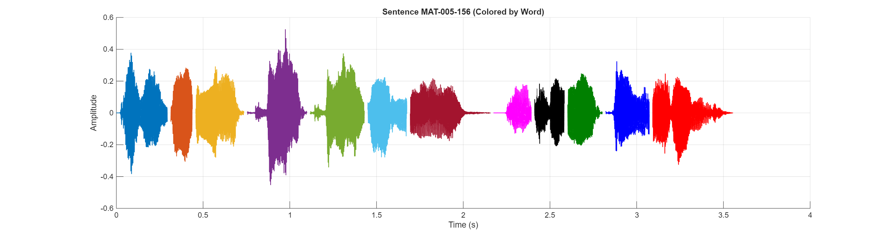

Sentence Audio:
Waveform:
| # | ID | Hanji | POJ |
|---|---|---|---|
| 1 | MAT-005-156-0003 | 因為 | in-ūi |
| 2 | MAT-005-156-0004 | 恁 | lín |
| 3 | MAT-005-156-0005 | 若 | nā |
| 4 | MAT-005-156-0006 | 疼 | thiàⁿ |
| 5 | MAT-005-156-0007 | 疼 | thiàⁿ |
| 6 | MAT-005-156-0008 | 恁 | lín |
| 7 | MAT-005-156-0009 | 的 | ê |
| 8 | MAT-005-156-0010 | 有 | ū |
| 9 | MAT-005-156-0011 | 甚 | sím |
| 10 | MAT-005-156-0012 | 麼 | mı̍h |
| 11 | MAT-005-156-0013 | 報 | pò |
| 12 | MAT-005-156-0014 | 賞 | siúⁿ |